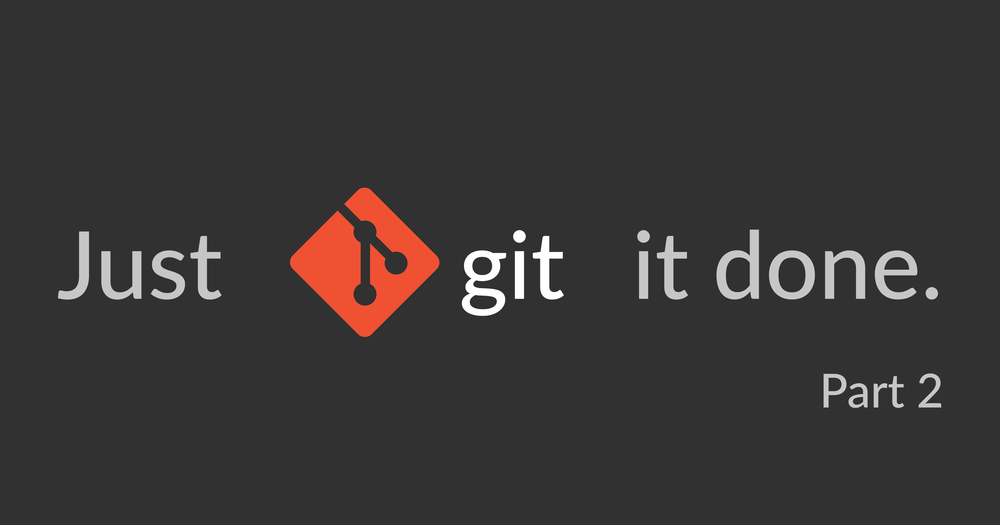

My Takes
Technical deep-dives on the web, plus personal essays on life and cinema.
Featured Takes
Tech
Deep-dives on the web — breaking down dev tools, version control, and how things work under the hood.
Git & Version Control
Web Fundamentals
Dev Concepts
Why Version Control Systems are Essential
Before touching a single Git command — why every developer needs version control.
Read it
Git for Beginners
The practical walkthrough — repos, commits, branches, and your first workflow.
Read itDeep Diving Inside Git
Under the hood — how Git actually stores, tracks, and thinks about your code.
Read itLife & Cinema
Personal essays on films, everyday life, philosophy, and the things that move me off the keyboard.
Movie Takes
Personal Essays
Philosophy
Bikes
Viraj Writes on Medium
Personal essays live on Medium
Life, cinema, bikes, and philosophy — written without AI, meant to be felt.
Visit the blog